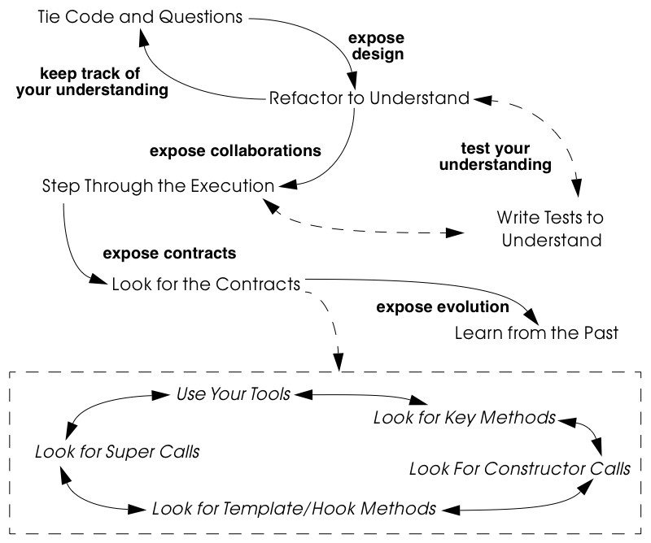
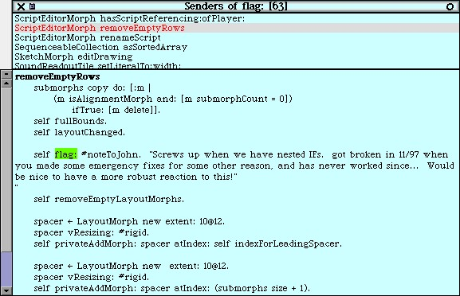

5. Detailed Model Capture
The patterns in First Contact should have helped you to get acquainted with the software system, while those in Initial Understanding should have helped you to understand which are the most important entities in the system. Your main priority now is to build up a detailed model of those parts of the system that will be important for your reengineering effort.
Most of the patterns concerned with Detailed Model Capture entail considerably more technical knowledge, use of tools and investment of effort than the patterns we have applied up to now. This is only natural, since only after you have built up your Initial Understanding can you determine whether more intensive investment of effort will pay off.
Forces
Although you already have an impression of the system, there are several forces at play that may make it difficult to extract a more detailed model:
-
Details matter. As argued by Brooks [Bro87], software engineering is different from other engineering disciplines because of the inherent lack of abstraction barriers. Other engineering disciplines rely on the laws of nature to hide irrelevant details, but software engineering must build on less solid foundations. Consequently, it is essential to pay attention to the details. The only question is how to filter out those details that do not matter, because you cannot possible investigate everything.
-
Design remains implicit._ As you read the code, many design decisions will become apparent to you, but it will not be clear why and how these decisions were made. In particular, it will be hard to tell which design decisions were easy to make, and which of them created a lot of grief. Nevertheless, such knowledge is crucial during a reengineering project because you want to avoid making the same mistakes over and over again. Consequently, once you discover the underlying design rationale, make sure that it is properly recorded. This way, your successors will be able to build on your discoveries rather than be forced to reinvent the wheel.
-
Design does evolve. Change is an essential ingredient of a successful system, certainly in object-oriented development processes with their emphasis on iterative development. As a consequence, design documents will always be out-of date with respect to the actual situation. However, this also implies that change itself is the key to understand how and why the design of a system has evolved the way it is. Consequently, assume that important design issues will be reflected in the source code and in the way this code has changed over time.* _Static structure versus Dynamic behavior. Object-oriented source code tells you which classes are defined, and how they are arranged in a class hierarchy. It is much harder to see which objects are instantiated at run-time, and how they collaborate to support the system. On a fine-grained level however, the latter is much more relevant than the former, especially due to the use of polymorphism. _Consequently, to extract the detailed design one must inevitably study the dynamic behavior.
Overview
The patterns of Detailed Model Capture propose a series of activities that help you to expose design artifacts that are hidden in the code. Although some of these patterns, in particular Tie Code and Questions, are lightweight, most of them entail considerable effort, so you should evaluate carefully how much you expect to get out of applying them.
Figure 5.1 suggests some possible relationships between the patterns. Tie Code and Questions is perhaps the most fundamental of these patterns, and the easiest to apply. As you work through the source code, keep track of comments, questions, hypotheses and possible actions to perform by directly annotating the source code at the point where the comment applies. This pattern works well with the other patterns in this cluster, and can be productively applied throughout a reengineering project.
Refactor to Understand helps you to expose the design of cryptic code.

Figure 5.1: The patterns of Detailed Model Capture help you to expose the design of the software system and keep track of your understanding.
It is important to understand that the intent of this pattern is not to improve the code base itself, but only to improve your understanding. It might well be that you decide to keep the results of your refactorings, but this should not be your goal at this point. Your refactorings should instead be treated as experiments to tests various hypotheses concerning the code.
Since the source code gives you only a very static view of the class hierarchy, it is useful to Step Through the Execution to learn what objects are instantiated and run time and how they interact.
Although it is very easy to extract the interfaces of the classes in the system, this will not tell you very much about how these interfaces can or should be used. What you really need is to do is Look for the Contracts supported by each class. The contracts tell you which client-supplier relationships exist, and how the public interface of a class supports that relationship. Idiomatic coding practices and design patterns typically express such contracts in direct way, so you should train yourself to recognize them.
Finally, though you may be able to extract various design artifacts from the source code, you will not necessarily be able to get an insight into how the system evolved that way. In particular, you may wonder whether certain design decisions were really justified, or whether they were arbitrary, and you may wonder how stable parts of the design are. By comparing different versions of the code base and focusing on places where functionality was removed or refactored, you will be able to Learn from the Past.
What Next
Now that you have mastered the details of a part of your system, it is a good time to prepare for the actual reengineering by applying the patterns in Tests: Your Life Insurance!. In particular, as you Refactor to Understand, it is a good idea to Write Tests to Understand [p. 163], as this will give you confidence in your experiments. Also, patterns like Step Through the Execution, Look for the Contracts and Learn from the Past help you to see which components implement what functionality: this knowledge must be used to Test the Interface, Not the Implementation [p. 155] and to Record Business Rules as Tests [p. 159].
5.1 Tie Code and Questions
Intent Keep the questions and answers concerning your reengineering activities synchronized with the code by storing them directly in the source files.
Problem
How do you keep track of your understanding about a piece of code and the questions that you have, keep these remarks synchronized with the code during its future evolution, and share them with the other members of your team?
This problem is difficult because:
-
Writing up what you know and don’t know about the system you are analyzing is tedious and time-consuming.
-
Your understanding is a moving target, so it is hard to keep a written document up-to-date.
-
If you don’t write down your questions and insights as soon as they occur to you, you will not be able to keep track of them.
-
You want to share your knowledge with the team to maximize its value.
-
Logging questions and answers in log files, bulletin boards or email distribution lists may be convenient for disseminating knowledge within the team, and may provide a convenient searchable history of the team’s understanding, but when you are looking at a piece of code, it will be hard to tell what questions and answers pertain to it. _Yet, solving this problem is feasible because:* You can annotate the code, and therefore record your understanding physically close to the code element it refers to.
Solution
While you are working on the code annotate it directly and immediately with the questions you are facing.
In principle there are two ways to annotate the code.
-
Comment-based Annotations. This approach uses the commenting conventions of the programming language and as such is bettersuited for a text-oriented environment. A few conventions are needed to distinguish the normal comments from the annotations.
/* #to: John #by: SD #on: 3/12/99
Screws up when we have nested IFs. */Basic tools part of your program environment can then be used to search and modify annotations. With a little bit of extra effort one can easily build tools to query, extract and cross-index all commentbased annotations.
-
Method-based annotations. This approach exploits the possibility to query which method invokes a given method, a feature provided by many of today’s programming environments. The idea is to declare a global method accepting a few strings as an argument and having an empty method body. Each time you want to annotate a particular piece of code, you invoke that method passing your annotations as a parameter.
this.annotateCode("#to: John #by: SD #on: 3/12/99", "Screws up when we have nested IFs.");You can then use the querying and browsing facilities of your programming environment to identify the locations where this special method is invoked, thus where the annotations occur. Most programming environments can be extended by means of little scripts, in which case it is possible to develop tools to generate reports about all annotations.
Note that the less you change the code, the less likely it is that you will introduce errors. This makes the comment-based version safer than the method-based version.
Hints
-
Record your annotations as close as possible to the code to which they refer.
-
Annotations may be questions, hypotheses, “to do” lists, or simply observations about the code that you wish to record for future reference.
-
Use conventions to identify your annotations. In a team context, include, for example, the initials of the developer that made the comments and the date the comment was entered. This way you can easily query them.
-
Follow the corporate practices. If comments are written in a language other than English, continue if you can. However, if you have the choice never write your annotations in a language different from that in which the source code is written (English in most cases). Otherwise, you create a different context and force the reader to switch between them.
-
When you discover the answer to any one of your questions, immediately update the annotation for the benefit of future readers, or simply delete the question if it is no longer relevant.
Tradeoffs
Pros
-
Natural Synchronization. You keep the code and the annotations in close physical proximity, and you thereby improve your chances of keeping them in sync. While modifying the code, you will more naturally modify the annotations, or remove them if they become obsolete.
-
Improves Team Communication. Tie Code and Questions avoids that team members must open an extra communication channel (e-mail, bulletin boards, ···). They must read the code they work with anyhow so you can multiplex the code as a communication channel.
-
Minimize Context Description. When you annotate the code you are immediately in context. This way you will minimize the need to describe the context of your questions and keep your effort low while documenting your questions and annotations.
Cons
-
Passive in Nature. Questions that you enter are not necessarily directed to anyone and even if they are, it is not certain that the addressee will read them or answer them in time. Additional tools are needed to collect the annotations and maybe even notify the appropriate persons.
-
Process Incompatibility. Many companies are organized around a hierarchical reporting structure. Tie Code and Questions may be rejected by these organizations because it circumvents the normal communication channels. Also, some corporate practices impose strong constraints on what programmers are allowed to do with the code, which may limit the potential if this pattern. For instance, if annotations cannot be removed when they become obsolete, they will create too much noise to be useful.
Difficulties
-
Finding the Right Granularity. As with any kind of comments, you should take care to introduce just the right amount of detail. Terse or cryptic annotations quickly lose their value, and verbose annotations will distract the reader from the code itself.
-
Motivating the Programmers to Write Comments. Programmers generally do not like to write comments or documentation. One way of motivating them is to use the annotations during code reviews or status meetings: this way the comments have an immediate benefit.
-
Quality of the Answers. As with any other kinds of documentation, it may happen that wrong answers are given. One way to deal with this situation is to review the annotations regularly within the team.
-
Eliminating the Annotations. On certain occasions you may wish the remove the annotations. For instance, if you must deliver a “clean” version of the source-code to your customer, or if your compiler isn’t smart enough to remove an invocation of an empty method body. In that case, make sure that you have the proper tools to filter out the annotations.
Rationale
This pattern has its roots in literate programming [RS89][Knu92]. A literate program reverses the usual relationship between program text and comments: executable code is embedded within documentation, not the other way around. Literate programming puts the emphasis on keeping the code and its documentation physically close. The physical proximity reduces the effort spent in keeping the code and its documentation in sync.
Known Uses
Comment-based annotations. Various programming environments provide implicit support for managing annotations within the code. Emacs, for example, has a built-in tool, called e-tags, which allows you to easily generate a cross-reference database of a a set of files [CRR96]. The Eiffel environment, on the other hand, allows you to assign different levels of visibility to your comments (and your code). If you assign private scope to your annotations you can easily separate the annotations yet make sure that these will not be seen externally.
The company MediaGeniX — a Belgian company operating in the multi-media sector — used a systematic code tagging mechanism to record information about changes. The programming environment was altered in such a way that every change to the code was automatically annotated with a tag that describes the motivation for the code change (bug fix, change request, new release), the name of developer, and the time of the modification. Only the last tag is kept in the code, but via the configuration management system it is possible to inspect previous tags and changes. The tag also includes a free field where the developers may write what they want and is often used for questions and answers.
Method-based annotations. The Squeak development team [IKM+97] used this technique not so much to keep track of questions but as a means to facilitate communication in an open-source development project. In this team comments were introduced by invoking the method flag: defined in the class Object. Developers can query all senders of the flag: message to locate annotations. Furthermore, the method is defined to accept a symbol as its argument. This makes it possible to search more specifically, for example, for all the annotations flagged with the symbol #noteForJohn.
Object>>flag: aSymbol
"Send this message, with a relevant symbol as argument, to flag a message for subsequent retrieval. For example, you might put the following line in a number of messages:
self flag: #returnHereUrgently
Then, to retrieve all such messages, browse all senders of #returnHereUrgently."Figure 5.2 shows on the top pane all the senders of the flag: message in the Squeak2.7 environment. The bottom pane then shows the code of the method removeEmptyRows that contains a call to the method flag: highlighted. The flag: message is sent with argument #noteToJohn. The actual content of the annotation follows as a comment.
Related Patterns
Tie Code and Questions works well in tandem with Refactor to Understand. Questions in the code may often be resolved by refactoring it. Conversely, as you Refactor to Understand, new questions will be raised and can be entered as annotations.

Figure 5.2: Finding all senders of a message in Squeak.
5.2 Refactor to Understand
Intent _Iteratively refactor a part of a software system in order to validate and reflect your understanding of how it works.
Problem
How can you understand a cryptic piece code?
This problem is difficult because:
-
Cryptic code is difficult to read, hence to understand.
-
You may have some idea how the code works, but it is hard to verify because the code does not reflect your ideas.
Yet, solving this problem is feasible because:
-
The piece of code is relatively small and has clearly defined boundaries.
-
Your development tools allow for rapid edit-compile cycles, so you can make some small changes and check whether you’re still able to compile the source-code or that your tests still run.
-
You have a source-code browser that allows you to query dependencies between source-code entities (i.e., which methods invoke a given operation, which methods access a given attribute, …), so that you can infer its purpose.
Solution
Iteratively rename and refactor the code to introduce meaningful names and to make sure the structure of the code reflects what the system is actually doing. Run regression tests after each change if they are available, else compile often to check whether your changes make sense. Decide what to do with the code after you have refactored it.
Hints
Your primary goal here is to understand the system, not to improve the code. The changes you make to the code should therefore be treated as “experiments” to test your understanding of the code. As a consequence, you should make a copy of the code before you start. After you have refactored the code, it is possible that you release any of the changes you make, but you do not want to make that decision up front. Perhaps your refactoring experiments will actually improve the code, but it is just as likely that you will make a mess of things since you do not yet understand the code. It does not really matter at this stage. After a first experience you will be in a better position to do a proper job of refactoring.
It is hard to do a good job of refactoring without having tests in place to verify that your changes have not broken anything. If adequate tests do not exist, you should not seriously consider keeping the results of your refactoring experiments. However, consider applying Write Tests to Understand [p. 163] in tandem with Refactor to Understand.
You should select refactoring operations that will make design decisions more explicit in the code. The typical refactorings applied during this iterative restructuring are Rename Attribute [p. 292], Rename Method [p. 292], and Extract Method [p. 291].
The following guidelines will help you to find out where and how to apply these refactorings to improve the readability of the code. Many of these guidelines are considered to be just good, standard practice in Smalltalk programming [Bec97]. They apply, however, equally well to other programming languages. They can be applied in any order; each of them participates in the understanding of the others.
-
Rename attributes to convey roles. Focus on attributes with cryptic names. To find out about their roles, look at all the attribute accesses (including invocations of accessors methods). Afterwards, rename the attribute and its accessors according to its role, update all references and re-compile the system.
-
Rename methods to convey intent. To retrieve the intent of a method that does not have an intention revealing name, investigate all invocations and attribute uses, and deduce the method’s responsibility. Afterwards, rename the method according to its intent, update all invocations and re-compile the system.
-
Rename classes to convey purpose. To capture the purpose of class having an unclear name, investigate clients of the class by examining who is invoking its operations or who is creating instances of it. Afterwards, rename the class according to its purpose, update all references and re-compile the system.
-
Remove duplicated code. If you identify duplicated code, try to refactor it into a single location. As such, you will identify slight differences that you probably would not have noticed before refactoring and that are likely to reveal some subtle design issues.
-
Replace condition branches by methods. If you encounter conditions with large branches, extract the leaves as new (private) methods. To name these methods, study the condition until you understand it well enough to choose an intention revealing name.
-
Refactor method bodies to a consistent level of abstraction. Long method bodies with comments separating blocks of code violate the rule of the thumb that all statements in a single method body should have the same level of abstraction. Refactor such code by introducing a new (private) method for each separated block of code; name the method after the intent recorded in the comment.
Tradeoffs
Pros
-
Expose design. Not only will the refactoring process improve your understanding of the code, but this understanding will also become explicit in the structure of the code. This will make it easier to further document that understanding by means of Tie Code and Questions or Write Tests to Understand [p. 163].
-
Incremental validation. Normally, understanding does not arise as part of a single revelation, but as the result of an iterative process in which earlier understanding is the base for the next iteration. Refactor to Understand encourages such an approach, because of its emphasis on small steps and frequent verification (either by running tests or either by compiling often).
Cons
-
Risk of introducing errors. The less you change the code, the smaller your chances of introducing errors. Small refactorings should be behavior-preserving, but it may be non-trivial to verify that even simple refactorings do not break the code. If you do not have adequate regression tests in place, it can be risky to introduce changes, or costly to develop the needed tests. For these reasons it is important to attempt to Refactor to Understand only on a working copy of the software.
Difficulties
-
Tool Support. Manually refactoring code can be tedious and risky [FBB+99]. Various tools, like the Refactoring Browser [RBJ97], greatly simplify the task of refactoring, and especially help to apply non-trivial refactorings such as Extract Method.
-
Acceptance of Changes. Refactoring someone else’s code may prove a lot harder than refactoring your own. A lot of companies have a strong culture of code ownership, so improving someone else’s code is often considered an insult. That is one of the reasons why you should not necessarily release the refactored version to the rest of the team.
-
When to stop. It is often difficult to stop changing code when you identify problems. Remember that your primary goal here is to just understand the system. When you have achieved that goal, it is time to stop.
Known Uses
Don Roberts and John Brant coined the term Refactor to Understand at ESUG ’97 and Smalltalk Solutions ’97 during a demonstration of the Refactoring Browser. They showed how they gradually understood an algorithm by renaming and refactoring its code. During the subsequent iterations of the pattern, the code slowly started to make sense and the design gradually became explicit in the code.
We applied this pattern ourselves during a FAMOOS case study. We had to understand a single method of about 3000 lines of C++, which was a deeply nested conditional. We first replaced the leaf condition branches by methods, gradually working our way up the nesting structure. After several iterations, we discovered that this method was actually implementing a complete parser for a small command language.
Harry Sneed reports several reengineering projects where a large Cobol program was refactored by removing all goto statements. However, he was later forced to reintroduce the go-to statements because the developers rejected his changes [Sne99].
Related Patterns
“Arranging the Furniture” [Tay00] is a pattern to help newcomers feel at home when they start in a new project. The pattern solution is: “An adopter should be encouraged to ‘move in’ by cosmetically arranging the code.”
What Next
Refactor to Understand works well in tandem with Tie Code and Questions. Refactorings are more expensive to implement than simply annotating the code, so first annotate, and then refactor. Also, consider to Write Tests to Understand [p. 163] as you refactor. These two activities reinforce each other since tests document your understanding of how a software artifact works, and refactoring helps you to expose its design. Furthermore, tests will help you to verify that your refactorings didn’t break anything.
When you have finished a round of Refactor to Understand, you must decide what to do with your changes. If you discard the experimental code, you should consider applying Tie Code and Questions to annotate the code base with the knowledge you have acquired.
5.3 Step Through the Execution
Intent Understand how objects in the system collaborate by stepping through examples in a debugger.
Problem
How do you discover which objects are instantiated at run-time and how they collaborate?
This problem is difficult because:
-
The source code exposes the class hierarchy, not the objects instantiated at run time and how they interact.
-
Collaborations are typically spread out through the code. Although it is easy to see which classes and methods are defined in a system, it can be hard to tell by reading the source code alone which sequence of events will lead to an object being created or a method being invoked.
-
In the presence of polymorphism, it can be especially difficult to tell which objects are clients of which service providers. Just because an object uses a certain interface that another object provides, does not mean that the former is actually a client of the latter.
-
Reading the code will not tell you what concrete scenarios can take place. The actual flow of execution will depend on the internal state of all participating objects and this cannot be inferred directly from the source code.
-
The source code will not tell you which objects are long-lived and which are ephemeral (i.e., local to the execution of a single method).
Yet, solving this problem is feasible because:
-
You are aware of some typical usage scenarios.
-
You can run the code inside a debugger.
-
Your attention is focussed on part of the system.
Solution
Run each of the scenarios and use your debugger to step through the code.
Observe which objects collaborate and how they are instantiated. Afterwards, generalize these observations and record your knowledge for future reference, possibly by means of Tie Code and Questions and Record Business Rules as Tests [p. 159].
Hints
It is too time-consuming to step through every single statement of a running system. The assumption here is that you are focussed on some specific aspect of the system that is difficult to understand.
-
Set breakpoints to interrupt execution when the system enters the code you are interested in.
-
Change the internal state of the objects to see how alternative execution paths are triggered.
-
Restart a method currently on the execution stack to quickly verify a similar scenario.
Tradeoffs
Pros
-
Realistic View. By stepping through the running program, you get a precise picture of how the scenario unfolds. Moreover, you can inspect the internal state of the objects involved, see how new objects are created and observe which objects collaborate under which circumstances.
-
Handles complexity. On a small scale it is possible to infer object collaborations from analyzing the source code. Slicing tools for instance may tell you which statements of the source code are affected by a given variable. For large and complex systems however, the number of possibilities and interactions is just too large. Therefore, the only reasonable way to learn how objects collaborate is to study the execution traces.
Cons
-
Scenario-based. Your must restrict yourself to a limited set of scenarios, hence the observed object-collaborations are necessarily incomplete. Of course you must do your best to choose representative scenarios. Unfortunately, this choice brings you back to square one, because the only way to be sure that you have a representative set of scenarios is to verify whether they cover all possible objectcollaborations.
-
Restricted Applicability. For systems where time plays a crucial role, stepping through the execution will give you an unrealistic view of the system’s behavior. Worse, for concurrent or distributed systems the mere fact of stepping through concurrent code may perturb the execution of the system itself. As such, you get the same effects as in Heisenberg’s uncertainty experiments, where determining exact positions of quantum particles imply that other attributes about these particles become uncertain.
Difficulties
-
Dependency on Tools. You need to have good debugger to Step Through the Execution. Not only must it allow to set and remove breakpoints dynamically, it also should provide the means to examine the state of the objects involved. And to easily verify alternative paths, the debugger should allow you to change the internal state of an object, or even restart a method currently on the execution stack.
What Next
You will need concrete scenarios in order to Step Through the Execution (possibly inferred from Interview During Demo [p. 59]). Consider encoding these scenarios as test cases. You can then iteratively Write Tests to Understand [p. 163] as you Step Through the Execution since the insights you gain into the states of collaborating objects can then be formulated as concrete tests.
As you Step Through the Execution, it is a good idea to keep an eye on the way collaborating objects use each other’s interface. Afterwards, you can exploit the knowledge you have gained to Look for the Contracts.
5.4 Look for the Contracts
Intent Infer the proper use of a class interface by studying the way clients currently use it.
Problem
How do you determine which contracts a class supports? That is, how do you know what a class expects from its client classes in order to function as intended.
This problem is difficult because:
-
Client/supplier relationships and contracts are only implicit in the code. Although interfaces are easy to extract from the code, they do not necessarily tell you how to use them properly. If not explicitly documented, it can be hard to guess (a) the proper sequence in which methods should be invoked, (b) the valid parameters that should be supplied, (c) which methods should be invoked by which clients, (d) which methods should be overridden by subclasses.
-
Typing and scoping rules often force programmers to compromise the provider’s interface. Moreover, encapsulation constructs (e.g., public/private declarations) are frequently misused to cope with implementation issues. For instance, database and user-interface toolkits often require the presence of public accessor methods.
Yet, solving this problem is feasible because:
-
You have a good understanding of the system’s structure (for example obtained via Initial Understanding), so you can distinguish key classes from less important ones.
-
You trust that the class is being used properly by its clients and its subclasses.
Solution
Look for common programming idioms that expose the way clients make use of the class interface. Generalize your observations in the form of contracts, i.e., explicit declarations of what a class expects from its clients.
Hints
Your goal here is to understand how classes collaborate by exposing the way in which the interface to a class is used by its different clients. Since an exhaustive analysis of the code will probably exhaust you, you need some way to expose the contracts without stepping through every single line of code.
Although contracts are only implicit in the code, most frequently there will be hints in the code that a particular relationship exists between various classes. These hints may manifest themselves as idioms particular to the programming language in use, conventions in use by the development team, or even common design patterns.
What precisely you should look for will depend on the context, but here are a few examples that are generally useful:
Use Your Tools. To get an overview of the relationships between classes, make the best use you can of the available tools. Although you could analyze the code by hand to infer relationships between classes, the process is tedious when applied to more than a couple of classes.
Many organizations use design extraction or round-trip engineering tools to document their systems. You can easily generate a draft view of the system you are analyzing without investing too much time. However, be prepared to be flooded with “boxes and arrows” diagrams containing irrelevant detail. Nevertheless, design extraction tools let you specify filters and ways to interpret code, so once your mappings are defined you can reuse them over multiple extractions.
The design overview can help you to identify key classes in the hierarchy (i.e., abstract classes that many other classes inherit from), part-whole relationships, and so on.
Look for Key Methods. Focus on the most important methods. With your knowledge of the system you will recognize key methods based on their signature.
-
Method Names. Key methods are likely to bear intention revealing names [Bec97].
-
Parameter types. Methods taking parameters with types corresponding to key classes in the system are likely to be important.
-
Recurring parameter types. Parameters represent temporary associations between objects. When the same parameter types often recur in method signatures, they are likely to represent important associations.
Look For Constructor Calls. To understand how and when to instantiate objects of a particular class, look for methods in other classes invoking the constructors.
Pay particular attention to which parameters are passed to the constructor, and whether the parameters are shared or not. This will help you determine which instance variables are parts of the constructed object, and which are merely references to shared objects.
Invocations of constructor methods may reveal a part-whole relationship. When a client stores the result of a constructor method in an attribute then this client will probably serve as the whole. On the other hand, when a client passes itself as an argument to a constructor method it is likely to act as a part.
Invocations of a constructor method may also expose a Factory Method [p. 293] or even an Abstract Factory [p. 293]. If they do, then you know that you will be able extend the system by subclassing the class under study.
Look for Template/Hook Methods. To understand how to specialize a class, look for (protected) methods that are overridden by subclasses, and identify the public methods that call them. The public, calling method is almost certainly a Template Method [p. 296]. Check the class hierarchy to determine whether the overridden method is abstract, in which case subclasses must implement it, or whether a default implementation is provided. In the latter case, it is a hook method, and subclasses may choose to override it or be happy with the default.
For each template method check all other methods it invokes as these are likely to represent other hook methods.
Look for Super Calls. To understand what assumptions a class makes about its subclasses, look for super calls. Super calls may be used by subclasses to extend an inherited method in an ad hoc way. But very often super calls express the fact that a particular method must not be overridden by subclasses unless the overridden method is explicitly invoked by a super call.
This idiom is heavily used in Java by classes that define multiple constructors. Any subclass of java.lang.Exception, for example, is expected to define both a default constructor and a constructor that takes a String argument. Those constructors should do nothing in particular except invoke the super constructor so that the exception subclass will be correctly initialized.
Tradeoffs
Pros
-
Reliable. You can trust the source code more than the documentation.
Cons
-
Bad habits linger. Just because certain practices appear in the code doesn’t mean that’s the right way to do things. The contracts that clients and subclasses adhere to are not necessarily the ones that the class actually supports.
-
Noise. Browsing the source code is like mining — once in a while you will find a gem but you will have to dig through a lot of dirt first. By focusing your attention on idiomatic usages, you should be able to reduce the noise factor to a large degree.
Known Uses
Many researchers have investigated ways to analyze how clients use a class interface. For instance, Brown [Bro96], Florijn [FMvW97] and Wuyts [Wuy98] have all shown that it is possible to find symptoms of design patterns in code. Also, Schauer et al. [SRMK99] report about a technique to semi-automatically detect hook methods based on analysis of overridden methods. The latter technique scales quite well, due to their particular way of visualizing class hierarchies and emphasizing classes where many methods are overridden, hence are likely to define hook methods. Additionally, Steyaert et al. [SLMD96] have shown that it is possible to capture how subclasses depend on their superclasses (they have named these dependencies reuse contracts) and afterwards detect potential conflicts when the superclasses gets changed.
What Next
One way to validate the contracts you have identified is to Step Through the Execution. Conversely, as you Step Through the Execution you will uncover collaborations between various objects. At that point you may Look for the Contracts that govern those collaborations.
If the code is hard to read, you may wish to Refactor to Understand before you Look for the Contracts. To understand how the contracts evolved to their current state, you might Learn from the Past.
5.5 Learn from the Past
Intent Obtain insights into the design by comparing subsequent versions of the system.
Problem
How can you discover why the system is designed the way it is? How can you learn which parts of the system are stable and which parts aren’t?
This problem is difficult because:
-
The lessons learned during a development process are rarely recorded in documentation. Furthermore, the developers’ perceptions and memory of design decisions tend to warp over time. Therefore, you can only rely on source code and must reconstruct the learning process from there.
-
The system is large and has been released in successive versions, and therefore you have a large quantity of source code to analyze. Text comparison tools (such as Unix diff) will not scale up for the sizes you’re dealing with.
-
Even if you have a tool to identify the changes between two subsequent releases, most of the changes will concern adding new functionality. For the reconstruction of the learning process and how this consolidated into the class design, you’re main interest lies in what happened with the old functionality.
Yet, solving this problem is feasible because:
-
You have a good understanding of the system’s structure (for example obtained via Initial Understanding), so you’re able to focus on appropriate subsystems.
-
You have access to the subsequent releases of the system, so you can reconstruct the changes by comparing the source code of the versions.
-
You have the means to examine what happened with individual source code entities. For instance, you have a metrics tool at your disposal, which allows you to quantify the size of entities in the sourcecode and use these numbers as a basis for comparison. As an alternative, you have a configuration management system that can provide you with information about particular changes to source-code entities.
-
You have enough expertise with refactorings in the implementation language being used, so you are able to recognize refactorings from their effects on source-code. Moreover, once you know which refactorings have been applied, you can use this expertise to make an educated guess at the underlying design rationale.
-
You have a source-code browser that allows you to query which methods invoke a given operation (even for polymorphic operations), so you can find out dependencies between classes and investigate how they are affected by the refactorings.
Solution
Use the metrics or configuration management tool to find entities where functionality has been removed, because such entities are a sign of a consolidating design. Also, look for entities which change often as these may point you to an unstable part of the design.
Hints
Your goal is to get a feeling for how and why the system has evolved to its current state. In particular, you want to understand which parts of the system have been heavily refactored, which parts have become stable, and which parts are hot spots of activity.
Portions of the software system that have been heavily extended are simply a sign of growth, not of evolution of the design. On the other hand, portions where software has been removed are signs that the design of the system has been altered. By understanding how it has been altered, you can obtain insights into the stability of the design.
Unstable design. If you detect repeated growth and refactoring in the same portion of the system, that should be a sign that the design is unstable. It may indicate opportunities to redesign that portion of the system to better accommodate the kinds of changes and extensions that habitually take place.
Mature and stable design. A mature subsystem will exhibit some growth and refactoring, followed by a period of stability. Early versions of the subsystem will show growth followed by refactoring, followed by a period in which only new classes and subclasses are added. As the hierarchy stabilizes, classes near the top of the hierarchy will exhibit only moderate growth, but little refactoring.
Tradeoffs
Pros
-
Concentrates on important design artifacts, because the changes point you to those places where the design is expanding or consolidating and this in turn provides insight into the underlying design rationale.
-
Provides an unbiased view of the system, because you do not have to formulate assumptions about what to expect in the software (in contrast to top-down techniques like Speculate about Design [p. 87]).
Cons
-
Requires considerable experience, in the sense that the reverse engineer must be well aware of how the refactorings interact with the coding idioms in the particular implementation language.
-
Considerable tool support is required, especially (a) a metrics tool or a configuration management system; (b) a code browsers that is able to trace back polymorphic method invocations.
Difficulties
-
Imprecise for many changes, because when too many changes have been applied on the same piece of code, it becomes difficult to reconstruct the change process.
-
Sensitive to renaming, if one identifies classes and methods via their name[1]. Then rename operations will show up as removals and additions which makes interpreting the data more difficult.
Rationale
Many object-oriented systems came into being via a combination of iterative and incremental development (see [Boo94] [GR95] [JGJ97] [Ree96]). That is, the original development team recognized their lack of problem domain expertise and therefore invested in a learning process where each learning phase resulted in a new system release. It is worthwhile to reconstruct that learning process because it will help you to understand the rationale embodied in the system design.
One way to reconstruct the learning process is to recover its primitive steps. In object-oriented parlance, these steps are called refactorings and consequently this pattern tells you how to recover refactorings like they have been applied in the past. The technique itself compares two subsequent releases of the source code identifying entities that decrease in size, because that’s the typical symptom of functionality that has been moved elsewhere.
Known Uses
We ran an experiment on three medium-sized systems implemented in Smalltalk. As reported in [DDN00], these case studies suggest that some simple heuristics can support the reverse engineering process by focusing attention on parts of the system where functionality has been removed. This way, we could for instance detect where a class had been split or where methods have been moved to a sibling class. Of course these refactorings must be examined in further detail to guess the intent behind the refactoring. This is never easy but in our experience has proven worthwhile. In one particular case for instance, we discovered several classes where methods had been moved to sibling classes. Closer examination revealed that the reengineer was moving these methods to break circular dependencies and was in fact introducing a layer.
Other researchers also report on examining changes to support the reverse engineering process. For instance, Ball et al. annotate code views with colors showing code age [BE96]. On the other hand, Jazayeri et al. use a three-dimensional visual representation for examining a system’s software release history [JGR99]. The same people have also investigated which change requests affect which software modules to detect logical dependencies between software modules [GHJ98].
What Next
Now that you discovered some stable parts in the design, you will probably want to reuse them. In that case take some precautions: first document the interfaces of that part (see Look for the Contracts) and then write the corresponding test cases (see Test the Interface, Not the Implementation [p. 155]).
On the other hand, the unstable parts of the design should probably be dismissed. Nevertheless, if the unstable part seems crucial for your reengineering project, then you must seek which change requests caused the instability. In that case, Chat with the Maintainers [p. 38] or even Interview During Demo [p. 59] and based on this knowledge decide how to restructure that part so that it is better suited for the kind of change requests that come in.